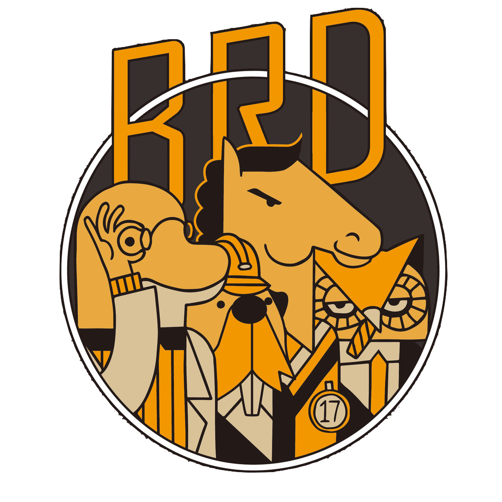
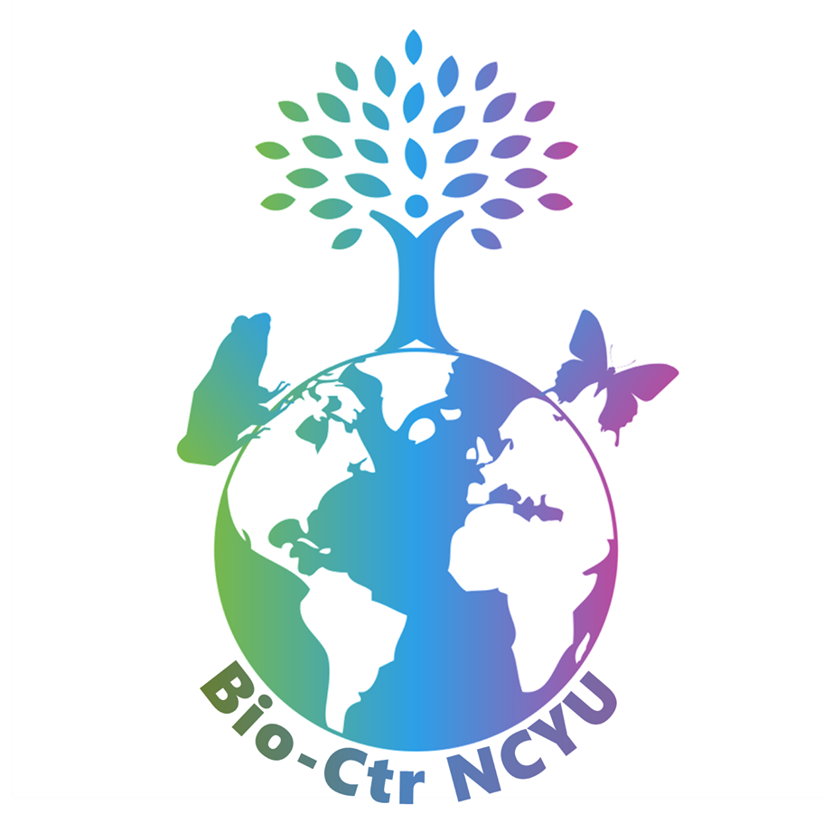

城市自然大挑戰-嘉義
首頁
關於
探索嘉義的生物
你曾關注過周遭公園的生物嗎？你知道嘉義的生物多樣性及特色嗎？歡迎在
4
⁄
26
至
4
⁄
30
來參與一年一度的全球
城市自然大挑戰
」活動！參與方式很容易，只要你走出戶外，探索自然並針對生物拍照：
探索
搜尋嘉義縣市內的自然生物，不管是蟲魚鳥獸，形體或痕跡
了解細節
拍照
拿出手機或相機，拍幾張照片紀錄，盡量放大並主題清楚
了解細節
分享
使用 iNaturalist 網頁介面或手機 app 來上傳觀察紀錄
了解細節
關於
城市自然大挑戰是由洛杉磯自然史博物館、加州科學院(博物館)發起，今年嘉義縣市的
iNaturalist 專案首頁
。主辦單位為：

國立嘉義大學生物資源學系
主辦單位

生物資源學系生物多樣性中心
協辦單位
國立嘉義大學
協辦單位
目前的統計
12345
觀察紀錄
387
參與人數
1852
紀錄生物
25
參與鄉鎮市區